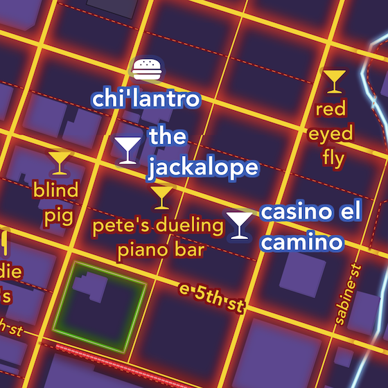

The United States Her Natural & Industrial Resources
I really love the challenge of making new things look old. I was inspired by this British map from around 1940.

Darkly Neon A Map that Glows
A map in the style of neon maps Glowing. Interactive. Mappy.
Austin Minimal With Watercolor Accents
Mashing up Stamen tiles into minimalistic home decor.

Vermont Railroad Map 18th Century Style
Like the RR Commissioner's Report of 1902.